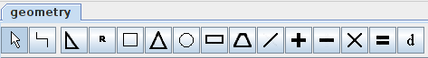
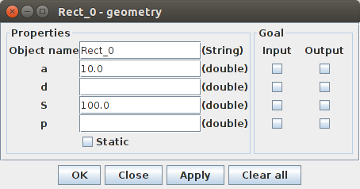

<div class="panel panel-default">
  <div class="panel-body">

<h1> Creating a geometry scheme</h1>

<p>Creating a scheme can be divided into 4 steps: </p>
<ul>
<li>Choosing the blocks.</li>
<li>Setting the input values</li>
<li>Setting the relations</li>
<li>Choosing the output value</li>
</ul>

<p>You can choose the blocks from the toolbar.</p>

<p>Use as many and as different as needed. To place a shape on the scheme click on the desired shape on toolbar and then, to place it anywhere on the scheme, click on the scheme.
</p>

<p>You can set the input values by double clicking on a shape, or by right clicking and selecting properties.</p>

<p>Once the properties window is open you can set the desired value by writing a value behind it's letter. If you check the input checkbox behind the value, then the program will ask the value from you when running the scheme (most of the times not needed).
</p>

<p>To set the relations between objects on the scheme, we need to use the relation tool on the toolbar. It is the second tool starting from left. Click on it once and click on a port on the scheme. Connect the port to another port on the scheme. The second port now gets it's value from the first port. If one size is a multiple of some other value, then you can use the multiplier block or a multiplier relation tool, marked with an asterisk, which allows setting a multiplier by which the value of the port is multiplied before the value is passed on to the second port.
</p>

<p>The easiest way to set the output is to place the "equals" block on the scheme and connecting it to the desired output. The other way to set an output is to open up the properties of an object (double click on it) and manually checking the output checkbox of the value to be calculated.
</p>

<p>When the output value is calculated, no more calculations are executed.</p>

<p>Next: <a href="run.html" class="inner-link">Running the scheme</a></p>

  </div>
  </div>
